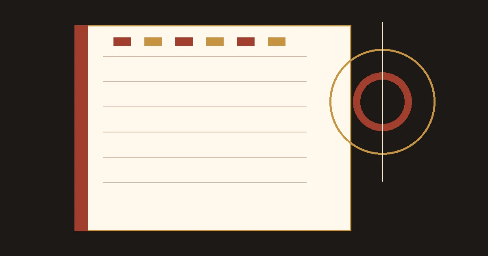

{{A09_TITLE}}
{{A09_LEAD}}
- 作者
- {{AUTHOR_NAME}}
- 发布
- {{DATE_PUBLISHED}}
- 修改
- {{DATE_MODIFIED}}
- 阅读
- {{A09_READING}}

TERM A
{{A09_TERM_A}}
{{A09_SIDE_A}}
TERM B
{{A09_TERM_B}}
{{A09_SIDE_B}}
01 / DIFFERENCE
{{A09_H2_1}}
{{A09_BODY_1}}
{{A09_QUOTE}}
观察项{{A09_ROW_1}}{{A09_ROW_2}}
{{A09_TERM_A}}
{{A09_CELL_A1}}
{{A09_CELL_A2}}
{{A09_TERM_B}}
{{A09_CELL_B1}}
{{A09_CELL_B2}}
QUESTION CARD
{{A09_FAQ_Q1}}
{{A09_FAQ_A1}}
{{A09_FAQ_Q2}}
{{A09_FAQ_A2}}